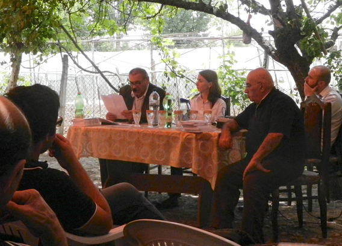

МИМИКРИЯ ПОД ГУМАНИЗМ
В МИРОТВОРЧЕСКОЙ ПРАКТИКЕ
Слушание состоялось 25 мая 2013 года в Текали, на стыке границ трех южнокавказских республик.
В рамках проекта «Символический суд по правам человека», при поддержке Национального фонда демократии (США).
На обсуждении участвовали жители Баку, Гянджи, Еревана, Ноемберяна, Тбилиси и приграничных сел Азербайджана, Армении и Грузии.
В рамках проекта «Символический суд по правам человека», при поддержке Национального фонда демократии (США).
На обсуждении участвовали жители Баку, Гянджи, Еревана, Ноемберяна, Тбилиси и приграничных сел Азербайджана, Армении и Грузии.
МЫСЛИ ПРОТИВ СТЕРЕОТИПОВ МИРОТВОРЧЕСКОЙ РИТОРИКИ
Ниязи Мехти
...Тон обсуждений был таков: армянская сторона стремилась доказать, что нам надо исходить из существующей ситуации и согласиться с отделением Нагорного Карабаха. Правда, все это было представлено в дружелюбном тоне и оснащено миротворческими и гуманистическими призывами об отвратительности войны и истребления людей. Только один человек из Нагорного Карабаха, живущего в Армении внес в этот общий тон некоторые милитаристские нюансы, намекая, что армия Нагорного Карабаха ой как сильна, так сильна, что даже способна дойти до Анкары.
Доклад полностью
НЕМИРНЫЙ МИР
Левон Джавахян
Карабахское движение извратило такие ценности человеческой природы как честность, любовь к родине, героизм… Подверглись спекуляции самые сокровенные чувства людей. Показные патриоты, показные люди чести, показные герои ловко использовали свои «преимущества» для своих карьеристских аппетитов, в бизнесе, в грабеже…
Доклад полностью
ОДНОСТОРОННЕЕ ДВИЖЕНИЕ ИЛИ ГРУЗИНО-АБХАЗСКИЙ И ГРУЗИНО-ОСЕТИНСКИЙ ДИАЛОГ
Гиорги Канашвили
С учетом этого качественно нового контекста, думаю, на определенный период открылось «окно возможностей», чтобы с грузинской стороны были осуществлены односторонние, смелые шаги, шанс чего будет уменьшаться параллельно со снижением рейтинга «Грузинской мечты».
Доклад полностью
